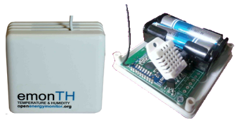

Technology that helps us live within ecological limits
The OpenEnergyMonitor System
System Overview
The OpenEnergyMonitor.org system is an open-source monitoring system with the capability to monitor electricity, temperature, humidity and interface with pulse output utility meters.
The system is made up of five main parts: the emonPi, emonTx, emonTH, emonGLCD, emonBase and emoncms.
These can be assembled and configured to work for a variety of applications from home energy monitoring to solar PV import/export monitoring and building fabric thermal performance monitoring.
The system is fully open source both hardware and software with documentation on everything from AC theory to sensor circuit design and application programming available on the openenergymonitor.org website.
emonPi
The emonPi is an open-hardware Raspberry Pi and Arduino based web-connected energy and environmental monitoring unit. It sits next to the electricity meter box and measures electricity being used or generated via up to two clip on CT (Current Transformer) sensors and an AC-AC adapter to provide an AC voltage sample for Real Power and Power Factor calculations. Data can be logged locally to the Raspberry Pi's SD card or posted remotly via Etherent of WIFI to emoncms.org
In addition to CT based electricity monitoring the emonPi has a pulse counting input which can be used for interfacing with smart meters and certain types of water meters. It also has a DS18B20 digital temperature sensing input which supports multiple DS18B20 temperature sensors on a single bus.
In June 2015 we ran a succesful Kickstarter crowdfunding campaign for the emonPi, the video we made can be seen above.
emonPi: Documentation, Shop, Kickstarter
emonTx
The emonTx is an energy monitoring node. Multiple emoonTx's can be used with a single emonPi or emonBase web-connected basestation. The emonTx sits next to the electricity meter box and measures electricity being used or generated via clip on CT (Current Transformer) sensors and an AC-AC adapter to power the unit and provide an AC voltage sample for Real Power and Power Factor calculations.
In addition to CT based electricity monitoring the emonTx has a pulse counting input which can be used for interfacing with smart meters and certain types of water meters. It also has a DS18B20 digital temperature sensing input which supports multiple DS18B20 temperature sensors on a single bus.
emonTx: Documentation, Shop
emonTH
The emonTH is a long lasting, easy to deploy wireless temperature and humidity sensing node designed for use in building thermal performance monitoring. The emonTH is powered by 2x AA batteries and is available with a choice of either DS18B20 based temperature sensing or DHT22 based Temperature and Humidity sensing. An external DS18B20 temperature sensor can easily be wired into screw terminal connector to provide external temperature readings.
emonTH: Documentation, Shop
emonBase
The emonBase is the internet gateway, relaying readings received wirelessly from sensor nodes to emoncms, which is an open source energy monitoring web application (see below). There are several basestation options but the recommended basestation is based on the Raspberry PI a popular low cost Linux computer. The RaspberryPI basestation can run a full LAMP web server with emoncms installed for local data-logging if used with an external harddrive or it can be configured to forward data directly to a remote server such as emoncms.org.
emonBase: Documentation, Shop
Emoncms
Emoncms.org is a powerful open-source web application for processing, storing, visualising energy and environmental data. One common application of emoncms is to explore historical electricity consumption data, zooming in at any point, either to see instantaneous power over seconds, minutes or hours or to see daily kWh use.
RF Radio
The system uses a commonly used FSK RFM69CW RF transceiver module which operates on the ISM frequency bands (433Mhz) to enable two way communication between the hardware modules.
RFM69CW: Documentation
Arduino and Raspberry Pi open platform
The emonPi, emonTx, emonGLCD and Raspberry Pi wireless receiver board (RFM69Pi) is based on the Arduino platform, a popular open-source micro controller platform with a large community. This makes these modules fully configurable and adaptable for different applications with a little programming knowledge. The emonBase uses the Raspberry Pi popular low cost Linux computer platform.
OpenEnergyMonitor Online Shop
The OpenEnergyMonitor system is available through the openenergymonitor shop. The system is currently primarily used by individuals, education institutions and companies with proficiency in electronics and software development. The system is a mixture of through hole electronics which are provided in kit form and pre-assembled surface mount boards. It is sold as a development kit, not yet a full commercial product.
Full pricing including volume pricing is available on the openenergymonitor shop:
The OpenEnergyMonitor shop is run by Megni energy monitoring.
Megni and OpenEnergyMonitor
Megni energy monitoring is run by Glyn Hudson and Trystan Lea. We are based in Snowdonia, North Wales. We are both also founders and core developers on the OpenEnergyMonitor project. The OpenEnergyMonitor project is its own entity separate from Megni it is an online open source community project with many developers from around the world contributing and using the technology for all sorts of different applications.
Our Values
Technology that helps us live within ecological limits.
The development of the system and its application is guided by the motivation to make the transition to sustainable energy in our own lives, we started by optimising electricity use in our own homes and understanding the contribution of solar pv generation, increasingly development is on measuring the performance of building fabric and sustainable heating systems and optimising the use of heating systems.
Open-Source
We use open-source technology developed by ourselves and others as a part of the OpenEnergyMonitor project. We believe open-source is a better way of doing things. You can learn more about this, how the technology works and how to build, repair and improve it, on the project website: openenergymonitor.org
Eryri/Snowdonia
We are based in the mountains of Eryri (Snowdonia) North Wales and we stayed here because of the mountains, we are keen climbers and mountain bikers. Thanks to the internet we enjoy developing open hardware and software and running a technology business from here too.
Glyn's blog: zerocarbonadventures.co.uk
Trystan's blog: trystanlea.org.uk
Twitter: @trystanlea, @glynhudson, @openenergymon